Instrument Panel Lower Removal |
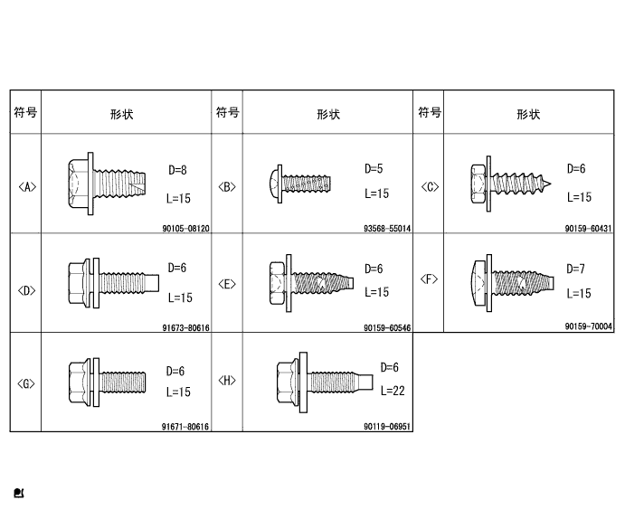
| 1. Handling and Work Precautions |
)| 2. Check Front Wheels Straight-ahead Position |
| 3. Disconnect Battery Negative Terminal |
)| 4. Remove Instrument Cluster Finish Panel Assembly |
Operate the tilt lever to lower the steering wheel.
 |
Apply protective tape to the positions shown in the illustration.
 |
Disengage the 9 clips and 2 claws, and remove the instrument cluster finish panel.
| 5. Remove Combination Meter Assembly |
 |
Remove the 4 screws.
 |
Pull the combination meter assembly toward the rear of the vehicle, disconnect the connectors, and remove the combination meter assembly.
| 6. Remove Instrument Panel Finish Panel End RH |
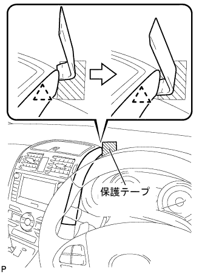 |
Apply protective tape to the positions shown in the illustration.
Insert a moulding remover and move it to near the clip engagement as shown in the illustration.
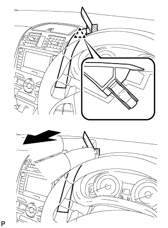 |
As shown in the illustration, pull the moulding remover with both hands in the direction of the arrow to disengage the clip.
 |
Disengage the 3 clips and remove the instrument panel finish panel end RH.
| 7. Remove Instrument Panel Finish Panel End LH |
 |
Apply protective tape to the positions shown in the illustration.
Insert a moulding remover and move it to near the clip engagement as shown in the illustration.
 |
As shown in the illustration, pull the moulding remover with both hands in the direction of the arrow to disengage the clip.
Disengage the 3 clips and remove the instrument panel finish panel end LH.
| 8. Remove Instrument Panel Register Assembly CTR |
 |
Pull the instrument panel register assembly CTR horizontally toward the rear of the vehicle to disengage the 2 clips, 5 claws and 3 guides.
 |
Disconnect the connector and remove the instrument panel register assembly CTR.
| 9. Remove Front Pillar Garnish Corner Piece RH |
 |
Apply protective tape to the positions shown in the illustration.
Using a thin flat-tip screwdriver wrapped with protective tape, disengage the 5 claws and 2 guides A.
Disengage the 2 guides B and remove the front pillar garnish corner piece RH.
| 10. Remove Front Pillar Garnish RH |
 |
Pull the upper part of the garnish in the direction of arrow (1) shown in the illustration to disengage the clip and front pillar garnish clip.
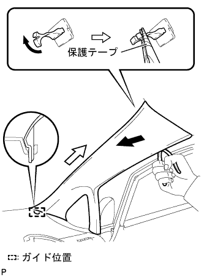 |
Using needle-nose pliers wrapped with protective tape, turn the front pillar garnish clip 90° and disconnect it from the front pillar garnish RH.
Pull the garnish in the direction of the arrow shown in the illustration, disengage the guide and remove the front pillar garnish RH.
 |
Curtain Shield Airbag Protection
Using cloth or nylon, wrap the airbag portion as shown in the illustration and fix both ends of the cloth or nylon with packing tape.
| 11. Remove Front Pillar Garnish Corner Piece LH |
| 12. Remove Front Pillar Garnish LH |
| 13. Remove Shift Lever Knob |
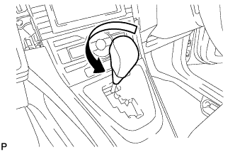 |
Turn the shift lever knob in the direction of the arrow shown in the illustration to remove it.
| 14. Remove Box Panel NO.2 |
 |
Apply protective tape to the positions shown in the illustration.
Using a moulding remover, disengage the 4 clips.
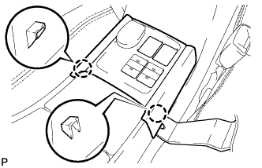 |
Using a moulding remover, disengage the 2 claws.
Disconnect each connector and remove box panel No.2.
| 15. Remove Position Indicator Housing Assembly |
 |
As shown in the illustration, using a moulding remover, disengage the 3 claws.
 |
Disengage the 6 claws.
Disconnect the connector and remove the position indicator housing assembly.
| 16. Remove Instrument Cluster Finish Panel Assembly Center NO.1 |
 |
Remove the 2 screws <C>.
 |
Disengage the 6 clips and 4 claws, and remove instrument cluster finish panel assembly center No.1.
| 17. Remove Glove Compartment Door Assembly |
 |
Disengage the claw and disconnect the glove compartment door stopper sub-assembly.
Slightly deform parts A and B shown in the illustration in the direction of the arrows, release the 2 stoppers and pull out the glove compartment door assembly until it is horizontal.
 |
Pull the glove compartment door assembly horizontally toward the rear of the vehicle, disengage the 2 hinge claws and remove the glove compartment door assembly.
| 18. Remove Instrument Panel Box Door Sub-assembly NO.1 |
w/ Stereo Jack Adapter Assembly No.1:
Remove the instrument panel finish plate. (see)
 |
Remove the 2 screws <B>.
 |
Apply protective tape to the positions shown in the illustration.
Place your hand at the position shown in the illustration and disengage the clips and claws.
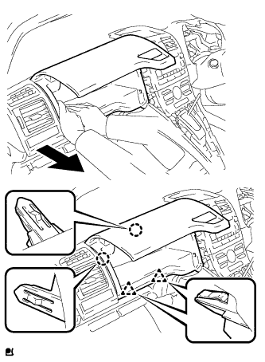 |
Place your hand at the position shown in the illustration and disengage the 2 clips and 2 claws.
 |
Pull in the direction of the arrow shown in the illustration to pull out the upper part of instrument panel box sub-assembly No.1.
Pull in the direction of the arrow shown in the illustration and remove instrument panel box sub-assembly No.1.
| 19. Disconnect Instrument Panel Passenger Airbag Assembly Connector |
 |
Disconnect the instrument panel passenger airbag assembly connector.
| 20. Remove Instrument Panel UPR w/ Instrument Panel Passenger Airbag Assembly |
 |
Apply protective tape to the positions shown in the illustration.
Operate the tilt lever to lower the steering wheel.
Disconnect the connectors.
Remove the 2 screws <B>.
Remove the 2 instrument panel passenger airbag assembly installation bolts <A>.

Disengage the 4 clips and 3 claws.

Pull toward the rear of the vehicle, disengage the 5 claws and remove the instrument panel UPR w/ instrument panel passenger airbag assembly.
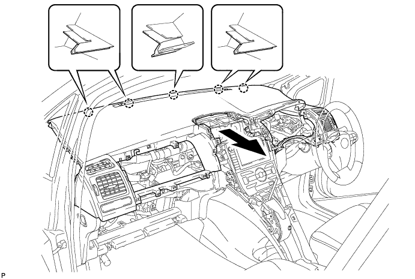
| 21. Remove Instrument Panel Under Cover Sub-assembly NO.1 |
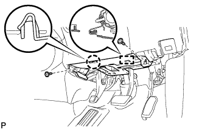 |
Remove the 2 screws.
Disengage the claw and guide.
Disconnect the connector and remove instrument panel under cover sub-assembly No.1.
| 22. Remove Instrument Panel Airbag Assembly LWR NO.1 |
 |
Remove the 4 bolts.
 |
Detach the instrument lower airbag No.1 from the 6 claws and 2 guides.
 |
Disconnect the connector and remove the instrument lower airbag No.1.
| 23. Remove Steering Wheel Cover LWR NO.3 (When Using New Instrument Panel LWR) |
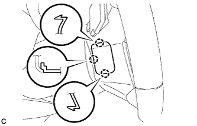 |
Steering Wheel Assembly 3 Spoke:
Disengage the 3 claws and remove steering wheel cover LWR No.3.
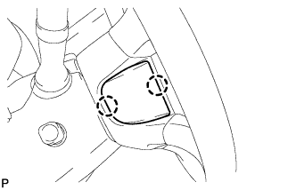 |
Steering Wheel Assembly 4 Spoke:
Disengage the 2 claws and remove steering wheel cover LWR No.3.
| 24. Remove Steering Wheel Cover LWR NO.2 (When Using New Instrument Panel LWR) |
 |
Steering Wheel Assembly 3 Spoke:
Disengage the 3 claws and remove steering wheel cover LWR No.2.
 |
Steering Wheel Assembly 4 Spoke:
Disengage the 2 claws and remove steering wheel cover LWR No.2.
| 25. Remove Horn Button Assembly (When Using New Instrument Panel LWR) |
Make sure that the ignition switch is OFF.
Check that the battery negative terminal is disconnected.
Using a flat-tip screwdriver, push in the 2 torsion springs shown in the illustration and disengage the 2 pins.
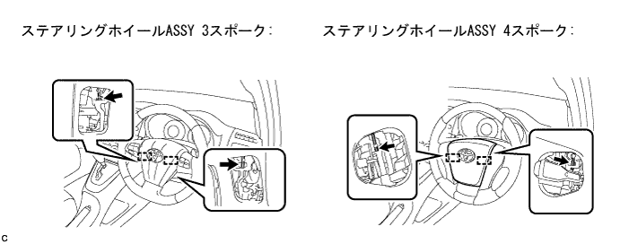
Pull the horn button assembly toward the rear of the vehicle.
 |
Using a thin flat-tip screwdriver wrapped with protective tape, pull up the lock of the airbag connector to release it.
| *1 | Protective Tape |
Disconnect the airbag connector and horn connector, and remove the horn button assembly.
| 26. Remove Steering Wheel Assembly (When Using New Instrument Panel LWR) |
Operate the tilt and telescopic mechanisms to fix the steering column assembly in its fully extended and fully raised position.
 |
Remove the nut and put matchmarks on the steering wheel assembly and steering column assembly.
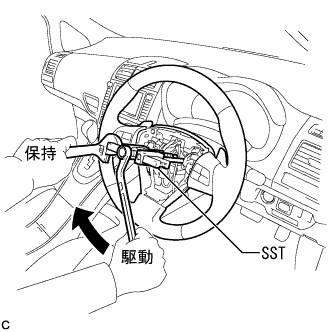 |
Using SST, remove the steering wheel assembly.
| 27. Remove Steering Column Cover (When Using New Instrument Panel LWR) |
Release the tilt lever.
 |
Push the steering column cover (lower side) from the left and right to disengage the 4 claws.
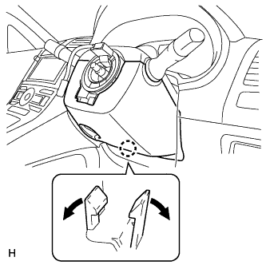 |
Insert a finger through the tilt lever opening of the steering column cover (lower side) and disengage the claw.
As shown in the illustration, insert a flat-tipped screwdriver wrapped with protective tape into the 2 service holes of the steering column cover (lower side), disengage the 2 claws and remove the steering column cover (lower side).

 |
Disengage the 2 claws and pins, and remove the steering column cover (upper side).
| 28. Remove Turn Signal Switch Assembly w/ Spiral Cable (When Using New Instrument Panel LWR) |
Disconnect each connector from the turn signal switch assembly w/ spiral cable.
 |
Using pliers, loosen the clamp.
With the clamp loosened, disengage the claws using a flat-tipped screwdriver, and remove the turn signal switch assembly w/ spiral cable from the steering column assembly.
| 29. Instrument Cluster Finish Panel Sub-assembly Center Removal (w/o Radio Receiver) |
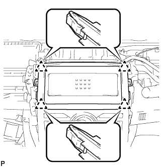 |
Disengage the 4 clips and remove the instrument cluster finish panel sub-assembly CTR.
| 30. Radio Tuner Opening Cover w/ Bracket Removal (w/o Radio Receiver) |
 |
Remove the 4 bolts <G> and remove the radio tuner opening cover w/ bracket.
| 31. Remove Radio Receiver Assembly w/ Bracket (w/ Radio Receiver) |
 |
Remove the 4 bolts.
 |
Disengage the 4 clips and pull the radio receiver assembly w/ bracket toward the rear of the vehicle.
Disconnect each connector and remove the radio receiver assembly w/ bracket.
| 32. Navigation Receiver Assembly w/ Bracket Removal (w/ HDD Navigation System) |
 |
Remove the 4 bolts.
 |
Disengage the 4 clips and pull the navigation receiver assembly w/ bracket toward the rear of the vehicle.
Disconnect each connector and remove the navigation receiver assembly w/ bracket.
| 33. Air Conditioner Control Assembly Removal |
 |
Disengage the 4 clips.
Disconnect the connector and remove the air conditioner control assembly.
| 34. Remove Console Box Cover RR |
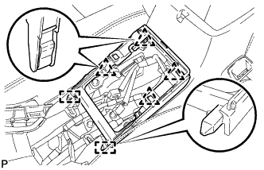 |
Disengage the 4 clips and 2 guides, and remove the console box cover rear.
| 35. Remove Console Box Carpet |
 |
Remove the console box carpet.
| 36. Remove Console Box Assembly RR |
 |
Remove the 4 bolts and 2 screws.
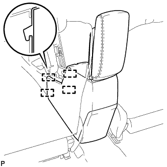 |
Disengage the 4 guides and remove the console box assembly rear.
| 37. Remove Front Door Scuff Plate RH |
 |
Disengage the 10 claws and remove the front door scuff plate RH.
| 38. Remove Cowl Side Trim Board RH |
 |
Disengage the 2 clips.
Disengage the guide and remove the cowl side trim board RH.
| 39. Remove Front Door Scuff Plate LH |
| 40. Remove Cowl Side Trim Board LH |
| 41. Fuse Box Opening Cover Removal |
 |
Disengage the 4 clips and 4 claws.
Disconnect each connector and remove the fuse box opening cover.
| 42. Remove Console Box Insert |
 |
Disengage the 3 claws.
Disengage the guide and remove the console box insert.
| 43. Remove Console Box Insert FR NO.2 |
 |
Disengage the 3 claws.
Disengage the guide and remove console box insert FR No.2.
| 44. Remove Instrument Panel Under Cover Sub-assembly NO.2 |
 |
Disengage the 3 claws and guide, and remove instrument panel under cover sub-assembly No.2.
| 45. Remove Box Bottom Mat |
| 46. Remove Instrument Panel Under Tray |
 |
Using a flat-tipped screwdriver wrapped with protective tape, disengage the 4 claws and remove the instrument panel under tray.
| 47. Remove Instrument Panel Finish Panel Lower NO.1 |
 |
Remove the 2 screws <C>.
 |
Disengage the 4 claws and 2 guides.
 |
Pull in the direction of the arrow in the illustration to disengage the 2 clips and guide, and remove instrument panel finish panel lower No.1.
| 48. Remove Instrument Panel Finish Panel Lower NO.2 |
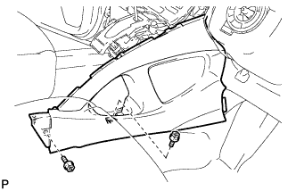 |
Remove the 2 screws <C>.
 |
Pull in the direction of the arrow in the illustration to disengage the 2 clips and guide, and remove instrument panel finish panel lower No.2.
| 49. Switch Hole Base NO.1 Removal |
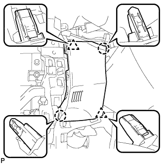 |
Disengage the 2 clips and 2 claws, and remove switch hole base No.1.
| 50. Shift Lock Control Unit Assembly Disconnection |
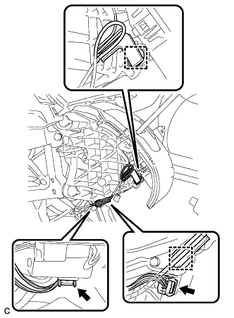 |
Disconnect the 2 clamps and 2 connectors.
 |
Remove the 4 nuts and remove the shift lever assembly.
| 51. Instrument Panel Sub-assembly Lower Removal |
 |
Disengage the 2 claws and disconnect the DLC3 connector.
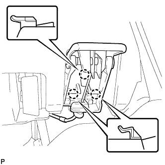 |
Disengage the 3 claws and remove the hood lock control lever.
Disconnect the connectors.
Disengage each clamp.
Remove the cooler thermistor (room temperature sensor) hose.
Remove the 2 screws <C>.
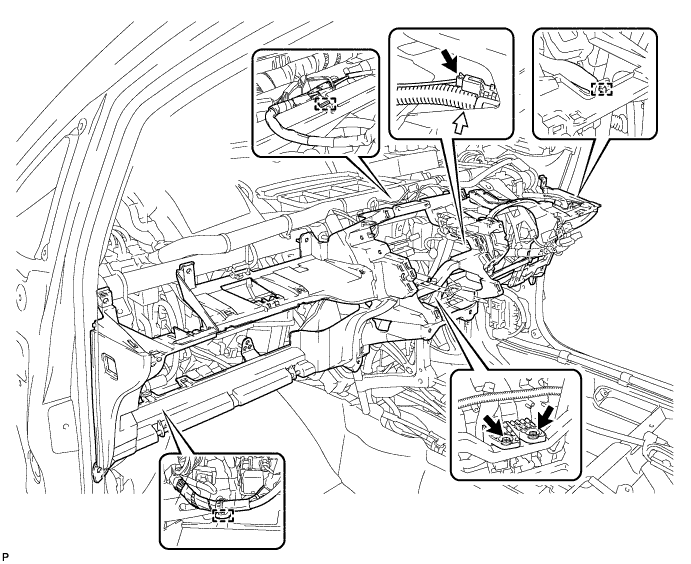
Remove screw <C>, the 2 bolts <D> and the 9 screws <E> or <F>.
Disengage the 2 claws and 2 guides, and remove the instrument panel sub-assembly LWR.
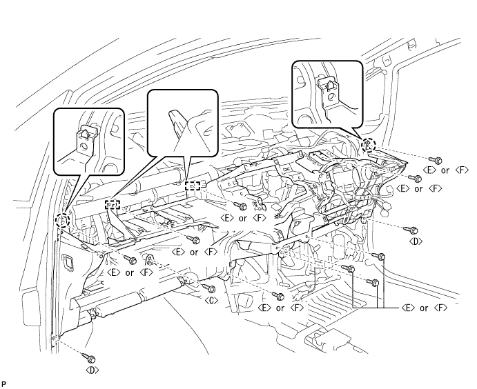
| 52. Remove Cooler Thermistor (Room Temperature Sensor) |
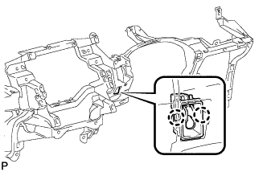 |
Disengage the 2 claws and remove the cooler thermistor (room temperature sensor).
| 53. Remove Glove Compartment Door Stopper Sub-assembly |
 |
Disengage the claw and remove the glove compartment door stopper sub-assembly.
| 54. Remove Instrument Panel Hole Cover |
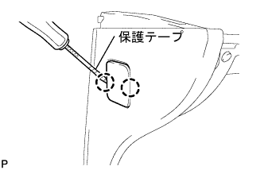 |
Using a thin-blade screwdriver wrapped with protective tape, disengage the 2 claws and remove the instrument panel hole cover.
| 55. Antenna Cord Sub-assembly Removal |
 |
Disconnect the connector.
 |
Using a clip remover, disengage the clamp.
 |
Remove the bolt.
Disconnect the connector.
Using a clip remover, disengage the 4 clamps and remove the antenna cord.
| 56. Remove Navigation Antenna Cord (w/ HDD Navigation System) |
 |
Detach the 2 clamps and remove the navigation antenna cord from the instrument panel LWR.